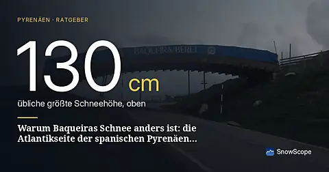

Schneeberichte · Pyrenäen
Tägliche Schneeberichte für Skifahrer: wo der Schnee liegt, was kommt und wo du fahren kannst, aus der SnowScope-Schneekarte und Messstationen. Jede Zahl stammt aus den Daten des Tages.
Schnee nach Ländern heute
Die weißesten Länder heute: Andorra (30 %), Frankreich (18 %) und Spanien (1 %).
Am meisten Neuschnee in der kommenden Woche: Frankreich (38 cm), Spanien (18 cm) und Andorra (15 cm).
| Land | Weiß | Schneereichstes Skigebiet | Nächste 7 Tage |
|---|---|---|---|
| Andorra | 30 % | Canaro · 13 cm | 15 cm |
| Frankreich | 18 % | La Grave · 171 cm | 38 cm |
| Spanien | 1 % | Aramón Cerler · 12 cm | 18 cm |
Schnee heute in den großen Skigebieten
- Piau-Engaly · 43 cm
- Gourette · 26 cm
- Peyragudes · 22 cm
- Gavarnie-Gèdre · 20 cm
- Grand Tourmalet · 19 cm
- Astun · 18 cm
- Canaro · 17 cm
- Luz-Ardiden · 16 cm
- Candanchu · 14 cm
- Formigal · 14 cm
- Estació d'Esquí Baqueira-Beret · 13 cm
- Aramón Cerler · 12 cm
- La Pierre Saint-Martin · 11 cm
- Ordino-Arcalis · 11 cm
- Saint-Lary · 10 cm
- Boí Taüll · 9 cm
- Ax 3 Domaines · 8 cm
- Masella · 8 cm
- Pal-Arinsal · 5 cm
- GrandValira · 4 cm
- La Molina · 3 cm
- Les Angles · 3 cm
- Font-Romeu Pyrénées 2000 · 2 cm
- Estació d'esquí de Port-Ainé

Boí Taüll startet auf 2039 m und schlägt Baqueira Beret beim Preis für den Tagesskipass, obwohl der Schnee Anfang Dezember Geduld erfordert.

Cauterets bietet 25 km Pisten für 46 EUR, aber unsere Schnee-Historie zeigt, dass die besten Chancen auf eine Schneedecke in der letzten Dezemberwoche liegen.

Vergleiche Grandvalira und spanische Skigebiete im Dezember 2026 bezüglich Schneehöhen, Lift-Höhen und Preisen ab 49,00 EUR.

Für eine günstige Skiwoche mit der Familie im Dezember in Astún-Candanchú solltest du Ende Dezember anpeilen, wenn die oberen Pisten in 67 % der vergangenen Winter guten Schnee haben.

Planst du eine Reise nach Baqueira Beret im Dezember? Sieh dir unsere Schnee-Historie an, Ticketpreise ab 70,00 € für einen Tag und den Vergleich zu Astún-Candanchú.


Gourette und Cauterets im Vergleich: Höhen, üblicher Schnee pro Monat, die besten Wochen und die Anreise, aus 46 vergangenen Wintern.

Baqueira-Beret liegt im Val d'Aran, auf der Atlantikseite der Pyrenäen. Was das für den Schnee bedeutet, geprüft an 46 vergangenen Wintern im Vergleich mit La Molina, und wann man fahren sollte.

Weniger Schneetage an allen 120 Punkten in den Pyrenäen seit 1980-81, am stärksten unter 1.500 m: unsere 46-Winter-Reihe und die Forschung dazu.

So gelingt ein Tag in Luz-Ardiden, einem kleinen Skigebiet über Luz-Saint-Sauveur in den Hautes-Pyrénées: die Straße, die zwei Sektoren, der Schnee aus 46 vergangenen Wintern und die besten Wochen.